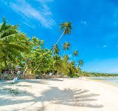

Refúgios Tropicais
Descanso, beleza e mar azul.
tudo em um só lugar.
Descubra os destinos dos seus sonhos!
Seja relaxando em praias paradisíacas, explorando a história de cidades encantadoras ou desafiando-se em aventuras na natureza,
temos o roteiro ideal para você.
Descanso, beleza e mar azul.
tudo em um só lugar.
Viaje no tempo através das ruas e histórias das nossas cidades encantadoras.
Viva experiências únicas em destinos cheios de emoção e natureza.
Explore destinos através dos sabores mais autênticos da gastronomia local.
Viaje com conforto, luxo e paisagens deslumbrantes enquanto navega pelos destinos mais incríveis do mundo.
Vivencie experiências autênticas em fazendas, vilarejos e sítios acolhedores.